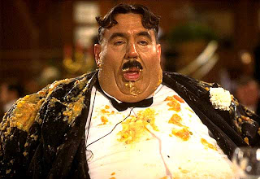

1. Táplálék elfogyasztása, annak szájba tétele, megrágása és lenyelése.
Az evés alatt alaposan meg kell rágni a falatot. A kedvetlen ember sokszor adja evésre a fejét, ezért aztán elhízik. A csiga evése sokaknak nincs az ínyére.
2. Időtartam, amit a táplálék elfogyasztására szánunk.
Minden evés után célszerű fogat mosni. Evés közben az emberek szívesen beszélgetnek.
3. Lakmározás, lakoma; mennyiségében túlzásba vitt táplálkozás.
A nagy evés minden vasárnap ebédkor ismétlődő szertartássá vált a családban. A szíves vendéglátás sok esetben evésben jut kifejezésre.
